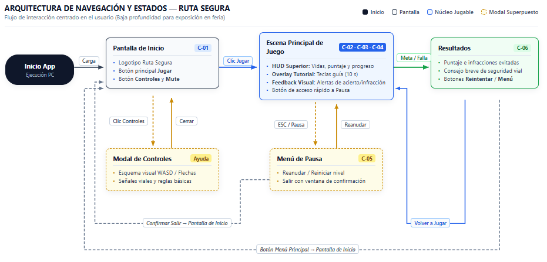
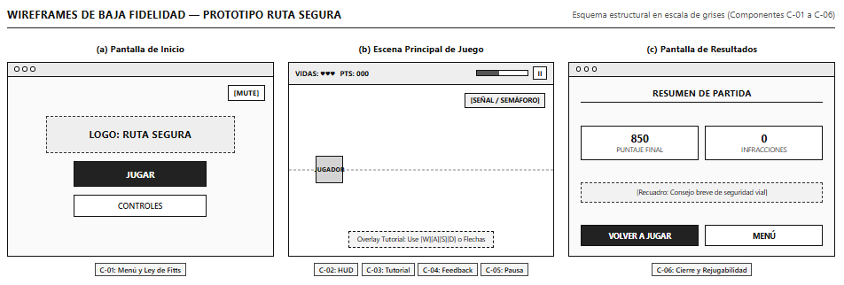

Documentos del proyecto
INFORME
Ruta Segura: Diseño Centrado en el Usuario y Prototipado de Interfaz
Artículo en formato IEEE: requerimientos, análisis del entorno, componentes de interfaz (C-01 a C-06) y diseño de la interfaz.
CÓDIGO
Código fuente del videojuego
Proyecto para Visual Studio Code: HTML, CSS y JavaScript sin dependencias. Incluye la guía de ejecución.
FIGURAS
Arquitectura de navegación y wireframes
Fig. 1: flujo de estados del juego. Fig. 2: bocetos de baja fidelidad de las pantallas principales.
Leer el informe aquí
Figuras


Principios de IHC aplicados
Heurísticas de NielsenVisibilidad del estado (HUD y semáforo en tiempo real), control y libertad (pausa, salida con confirmación), prevención de errores y ayuda para recuperarse de ellos (micro-explicaciones con la norma).
Ley de FittsBotón Jugar grande y centrado; botones principales de 72 px o más; controles táctiles de 56 px o más; pausa siempre en la misma esquina.
Gestalt: figura-fondoCiudad en grises de sillar desaturados; jugador, cebras, semáforos, vehículos y alertas en colores saturados.
Redundancia y retroalimentaciónCada evento combina color, icono, texto y sonido, y responde en el mismo cuadro de juego (< 100 ms).
Modos de juego
| Modo | Qué enseña | Cómo se evalúa |
|---|---|---|
| Peatón (5 niveles) | Semáforo peatonal, cebra, ambulancias, policía, celular, noche y lluvia | Vidas, estrellas y micro-explicaciones con la norma |
| Conductor (3 niveles) | Cinturón, límites de 30/50 km/h, semáforo vehicular, ceder el paso al peatón, PARE, CEDA EL PASO, policía, ambulancia y celular | Nota de examen práctico: se aprueba con 80/100 y sin faltas eliminatorias |
| Examen MTC | 40 preguntas basadas en el Reglamento Nacional de Tránsito | Práctica de 10 con explicación, o simulacro de 40 preguntas en 40 minutos (aprueba con 35) |
Niveles del modo Peatón
| Nivel | Destino | Desafío principal |
|---|---|---|
| 1 · Primeros pasos | Mercado San Camilo | Semáforo peatonal, cebra y cruce sin semáforo |
| 2 · Hora punta | UNSA · Av. Independencia | Combis imprudentes y distracción con el celular |
| 3 · Emergencias | Hospital Goyeneche | Ambulancias y policía de tránsito |
| 4 · Noche en el Centro | Monasterio de Santa Catalina | Visibilidad reducida |
| 5 · Lluvia en la Ciudad Blanca | Plaza de Armas | Pista mojada: los autos tardan en frenar |